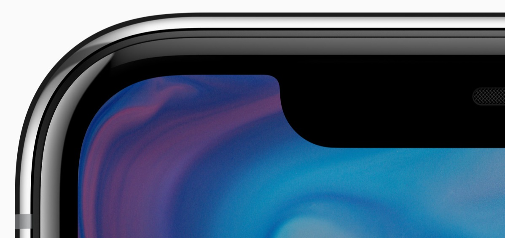
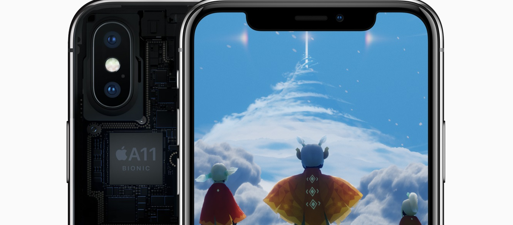
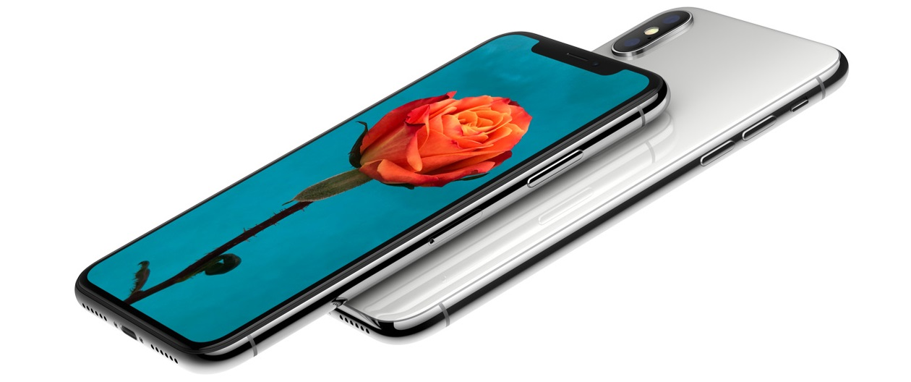

|
La iPhone X, dispozitivul este ecranul. Un ecran Super Retina de 5,8 inchi complet nou, care încape perfect în mână și îți încântă ochii. Ecranul e construit folosind tehnici și tehnologii noi, ce permit afișajului să urmărească perfect curbele telefonului până la marginile elegant rotunjite. 
Primul ecran OLED care se ridică la standardele iPhone, prezintă culori clare și uimitoare, negru autentic, luminozitate spectaculoasă și o rată de contrast de 1.000.000:1. Un spațiu minuscul găzduiește unele dintre cele mai sofisticate tehnologii pe care le-am dezvoltat vreodată, inclusiv camere și senzori ce permit Face ID. Cea mai rezistentă sticlă văzută vreodată la un smartphone, atât pe partea din față, cât și pe spate. Oțel inoxidabil chirurgical. Încărcare wireless. Rezistență la apă și praf. Gesturile familiare fac din navigare o experiență naturală și intuitivă. În loc să apeși pe un buton, o singură glisare pe care o faci oriunde, te duce la ecranul principal. 
Fața ta e acum parola ta. Face ID este o nouă modalitate de a debloca și a te autentifica. Face ID utilizează tehnologia camerei TrueDepth și este ușor de configurat. Aceasta proiectează și procesează peste 30.000 de puncte invizibile pentru a crea în profunzime o hartă precisă a feței tale. Noua funcție în modul Portret – Iluminare Portret – produce efecte impresionante de lumină, la calitate profesională. Camera TrueDepth analizează peste 50 de mișcări musculare diferite pentru a-ți oglindi expresiile prin 12 Animoji. Scoate la lumină personajele din tine – fie că e vorba de un ursuleț panda, un porcușor sau un robot. Un senzor de 12 MP mai mare și mai rapid. Un nou filtru de culoare. Pixeli mai profunzi. Și o nouă cameră telefoto cu OIS. Camerele care sesizează profunzimea și cartografierea facială precisă, creează efecte uimitoare de lumină, la o calitate profesională. Ambele camere posterioare au stabilizare optică a imaginii și obiective rapide pentru poze și videoclipuri spectaculoase, chiar și în condiții de luminozitate scăzută. Unghiul larg și camerele telefoto de pe iPhone X permit zoom optic, precum și zoom digital de până la 10x pentru poze și 6x pentru videoclipuri. 
Îți prezentăm A11 Bionic. Cel mai puternic și mai inteligent cip văzut vreodată la un smartphone, cu un procesor neural capabil de până la 600 de miliarde de operațiuni pe secundă. Cele patru nuclee de eficiență din complet noua CPU sunt cu până la 70% mai rapide comparativ cu A10 Fusion. Iar cele două nuclee de performanță sunt cu până la 25% mai rapide. Sistemul de învățare automată permite caracteristicii Face ID să se adapteze la schimbările aspectului tău în timp. Un controler de performanță de a doua generație și un design special al bateriei, cu o autonomie care durează cu până la 2 ore mai mult între încărcări, comparativ cu iPhone 7. Noua GPU cu 3 nuclee, proiectată de Apple, este cu până la 30% mai rapidă decât A10 Fusion. A11 Bionic oferă puterea necesară pentru experiențe extraordinare de realitate augmentată, în jocuri și aplicații. |